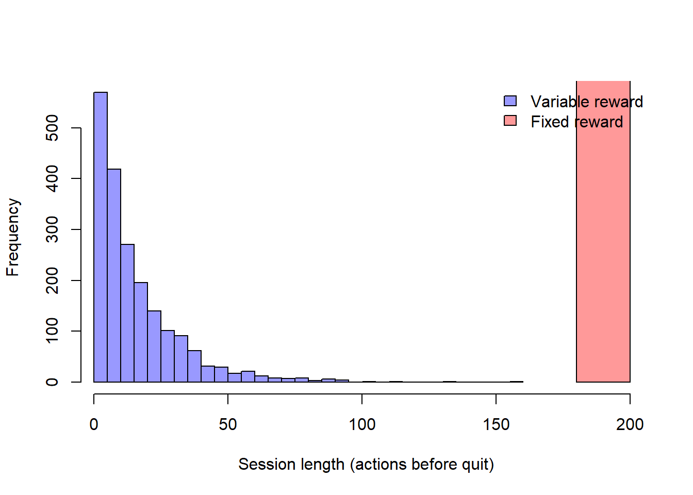

A game is a structured system of voluntary activity governed by rules that produce quantifiable outcomes and, crucially, engagement: players keep playing because the system makes playing intrinsically rewarding. Video games have grown into the largest single category of paid entertainment, larger than film and recorded music combined, and the economics of the industry rest less on selling a finished good than on sustaining a relationship in which a player returns, progresses, and—often—pays in small increments over months or years. That shift, from the boxed product to the live service, makes gaming a marketing problem of the first order: the central managerial decisions are about engagement design, monetization architecture, and the regulatory limits on both.
This chapter treats games as a marketing object along three axes. The first is the monetization architecture: how revenue is extracted from a population of players whose willingness to pay is enormously heterogeneous, and why the free-to-play model with in-game purchases dominates. The second is the engagement mechanics: the rule systems—progression, scarcity, social comparison, variable rewards—that convert attention into habit, and the construct of consumer engagement that the marketing literature uses to formalize them. The third is regulation and welfare: because the same mechanics that drive engagement can drive overconsumption, gaming has become one of the most heavily regulated consumer categories, and the evaluation of those regulations is a clean causal-inference problem that we develop in detail.
A fourth theme cuts across all of marketing rather than belonging to games alone: gamification, the transfer of game design elements—points, levels, badges, leaderboards, streaks—into non-game settings such as loyalty programs, fitness apps, and sales-force incentives. Gamification borrows the engagement machinery of games to serve a marketing goal, and inherits both its power and its ethical hazards. By the end of the chapter the reader should be able to formalize a free-to-play monetization model, define and measure consumer engagement, specify and identify the effect of a usage-restriction regulation, and reason about when a gamified mechanic creates value versus when it merely manufactures compulsion.
23.1 The Economics of In-Game Purchases
23.1.1 From Premium to Free-to-Play
Historically a game was a premium good: the player paid a fixed price once and received the complete experience. The dominant modern model inverts this. Under free-to-play (F2P), access is free and revenue comes from in-game purchases—small transactions, typically a few dollars, for virtual items, currency, cosmetic customization, time savings, or access to additional content. These transactions are commonly called microtransactions, and the business model is sometimes labeled freemium when a free tier coexists with paid upgrades.
The logic is a price-discrimination argument. Let consumers be indexed by a willingness-to-pay type \(\theta\) with distribution \(F(\theta)\) that is highly right-skewed: most players value the game modestly, a few value it intensely. A single premium price \(p\) excludes everyone with \(\theta < p\) and leaves all surplus from high-\(\theta\) players above \(p\) on the table. Free access (\(p = 0\)) admits the entire population, and a menu of in-game purchases then extracts revenue increasing in \(\theta\), approximating first-degree price discrimination through self-selection. Formally, if a player of type \(\theta\) chooses purchase intensity \(q\) to maximize utility \(u(q;\theta) - P(q)\) under a nonlinear price schedule \(P(q)\), expected revenue per installed player is
\[
R = \int_{\underline{\theta}}^{\overline{\theta}} P\big(q^\*(\theta)\big)\, dF(\theta),
\tag{23.1}\]
where \(q^\*(\theta)\) is the player’s optimal purchase intensity. Two features of Equation 23.1 drive industry practice. First, because \(F\) is right-skewed, \(R\) is dominated by its upper tail: a small fraction of players—the so-called whales—account for the majority of revenue, so the schedule \(P(q)\) is engineered to remain unbounded above (there is always something more to buy) rather than to clear a median consumer.1 Second, since admission is free, the marginal admitted player has \(\theta\) near zero and contributes through scale and network effects (see Chapter 68) rather than direct payment; the model trades certain small per-unit revenue for a far larger base.
The transition from a non-paying to a paying relationship is itself a measurable event. Cao, Chintagunta, and Li (2023) study the monetization of a non-advertising-based app and show that the timing and design of the conversion from free to paid materially shapes both retention and revenue: converting too aggressively sheds the low-\(\theta\) base that sustains network value, while converting too late forgoes extractable surplus from high-\(\theta\) users. The managerial object is therefore not a price but a conversion policy—when, and on what, to begin charging a player who arrived for free.
23.1.2 A Taxonomy of In-Game Purchases
Not all microtransactions are alike, and the distinction matters for both welfare and regulation. Table 23.1 organizes the major types by what they sell and the externality they impose on other players.
Table 23.1: A taxonomy of in-game purchases by object sold and externality.
Type
What is sold
Effect on other players
Regulatory salience
Cosmetic
Appearance, skins, emotes
None (purely expressive)
Low
Convenience / time-savers
Faster progression, energy refills
Mild (pacing)
Moderate
Pay-to-win
Competitive advantage
Strong negative
High
Content / expansion
New levels, characters
None
Low
Loot boxes / gacha
Randomized item bundles
Varies
Very high
The economically and ethically distinctive category is the loot box (also called gacha after the Japanese capsule-toy machine): a sealed bundle whose contents are randomized, purchased before the buyer knows what it contains. A loot box is a lottery. If a box costs \(c\) and yields item \(j\) with probability \(\pi_j\) and subjective value \(v_j\), the player buys when expected value exceeds price,
\[
\sum_j \pi_j\, v_j \;>\; c,
\tag{23.2}\]
but the structural similarity to gambling is exact: a stochastic payout purchased for a fixed stake, with the operator setting \(\{\pi_j\}\) to its advantage. The resemblance is the reason loot boxes have attracted the heaviest regulatory attention of any monetization mechanic, a point we return to in Section 23.4. The behavioral force is not the expected value in Equation 23.2 but the variable schedule of reinforcement the randomization creates, which we formalize next.
23.2 Engagement Mechanics
23.2.1 Consumer Engagement as a Construct
Marketing formalizes the “stickiness” of games through the construct of consumer engagement. Following the engagement literature, engagement is a consumer’s investment of operant (behavioral) and operand (cognitive, emotional) resources in interactions with a focal object beyond the act of purchase (Hollebeek 2011; Harmeling et al. 2016). It is explicitly a multidimensional construct with cognitive, emotional, and behavioral facets, and it is cumulative: today’s engagement raises the probability of tomorrow’s, which is precisely the dynamic a game’s reward system is designed to exploit. Engagement sits inside the broader customer experience and customer journey framework, the end-to-end set of touchpoints through which a consumer moves (Lemon and Verhoef 2016), and it is the proximal driver of the retention and monetization outcomes in Equation 23.1.
Customer engagement is the intensity of an individual’s participation in and connection with an organization’s offerings and activities, reflecting investment of resources beyond what is required for the transaction itself.
The reason engagement is the right construct—rather than, say, satisfaction or loyalty—is that it captures behavioral investment that is not yet a purchase. A player who logs in daily, completes a streak, or climbs a leaderboard has invested without paying; that accumulated investment is what later converts to spending and what a player is loath to abandon (a sunk-cost dynamic). Engagement is thus the mediating state between admission and monetization.
23.2.2 Theoretical Foundations
The engagement mechanics developed below rest on four theories drawn from psychology and behavioral economics, and stating them first explains why the same levers recur across monetization and dark patterns. The first is operant conditioning and its reinforcement schedules. In the behaviorist account (Skinner, Science and Human Behavior, 1953, a monograph cited here by name), behavior is shaped by the contingency between action and reward, and the schedule on which rewards arrive governs how persistent the behavior becomes. The decisive result is that variable-ratio schedules, which deliver a reward after an unpredictable number of actions, produce the highest and most resistant-to-extinction response rates, far exceeding fixed schedules. Loot boxes, random drops, and gacha pulls are variable-ratio schedules instantiated as commerce, which is the mechanism formalized in Equation 23.3.
The second theory explains why some engagement is benign and some compulsive. Self-determination theory holds that intrinsic motivation is sustained by satisfying three needs, autonomy, competence, and relatedness, and that extrinsic rewards can crowd out intrinsic motivation rather than add to it (Ryan and Deci 2000). A game that supports competence (mastery curves) and relatedness (social play) earns genuine engagement; a monetization design that substitutes purchased progress for earned competence undermines the intrinsic motivation it depends on. Flow theory (Csikszentmihalyi, Flow, 1990, a monograph cited by name) adds the condition under which engagement becomes absorbing: a player enters flow when challenge and skill are balanced, which is why difficulty curves and pacing are engineered to keep the player at the edge of competence.
The fourth strand is behavioral economics, which accounts for the monetization architecture and the dark patterns it enables. Loss aversion, the finding that losses loom roughly twice as large as equivalent gains (Tversky and Kahneman 1991; Kahneman and Tversky 1979), is why streaks and daily-login bonuses work: not playing is framed as forfeiting accumulated progress, a loss the player acts to avoid. The sunk-cost fallacy keeps a player invested because abandoned effort feels wasted, the dynamic that converts behavioral investment into retention. And the endowment effect, the tendency for mere ownership to raise perceived value, gives purchased and earned virtual items, skins and characters, a psychological hold disproportionate to their function, formalized as psychological ownership over digital goods (Pierce, Kostova, and Dirks 2003). These three biases are the levers a value-extracting design pulls, the welfare counterpart to the engagement machinery developed next.
23.2.3 The Reward-Schedule Model
The engineering core of an engagement mechanic is its reward schedule: the rule mapping player actions to rewards. As Section 23.2.2 sets out, the foundational result from the psychology of reinforcement is that variable-ratio schedules, rewards delivered after an unpredictable number of actions, produce the highest and most persistent response rates, far exceeding fixed schedules. Loot boxes, random drops, and gacha pulls are variable-ratio schedules instantiated as commerce.
A tractable formalization treats play as a sequence of actions, each of which may return a reward. Let the per-action reward be a random variable \(r_t\) with mean \(\mu\) and variance \(\sigma^2\), and let the player continue playing as long as the recent experienced reward keeps an internal motivation state \(m_t\) above a quit threshold \(\bar m\). A simple updating rule is
where \(\alpha\) is the persistence of motivation. Under a fixed reward (\(r_t = \mu\) deterministically) the state converges monotonically and the player habituates: the reward becomes predictable and \(m_t\) drifts toward a constant the designer cannot push above \(\bar m\) without raising \(\mu\) (costly). Under a variable reward with the same mean \(\mu\) but variance \(\sigma^2 > 0\), occasional large draws repeatedly spike \(m_t\) and reset the approach to the threshold, sustaining play at no additional expected reward cost. The designer’s lever is therefore \(\sigma^2\), not \(\mu\): variance is free engagement. This is the formal statement of why randomized rewards dominate, and why they are simultaneously the most effective and the most hazardous mechanic. The same logic explains why streaks and daily login bonuses work—they convert the quit decision into a recurring loss frame, so that not playing forfeits accumulated progress.
The following simulation makes the contrast concrete, comparing session length under fixed versus variable rewards with identical means; Figure 23.1 plots the resulting drop-out paths.
Code
set.seed(20)simulate_play<-function(n=200, mu=1, sigma=0, alpha=0.8,quit=0.6, m0=1){m<-m0for(tin1:n){r<-if(sigma==0)muelsergamma(1, shape =mu^2/sigma^2, scale =sigma^2/mu)m<-alpha*m+(1-alpha)*rif(m<quit)return(t)# player quits this session}n}reps<-2000fixed_len<-replicate(reps, simulate_play(sigma =0))variable_len<-replicate(reps, simulate_play(sigma =1.5))cat("Median session length (fixed reward): ", median(fixed_len), "\n")#> Median session length (fixed reward): 200cat("Median session length (variable reward):", median(variable_len), "\n")#> Median session length (variable reward): 11hist(variable_len, breaks =30, col =rgb(0, 0, 1, 0.4), xlab ="Session length (actions before quit)", main ="", xlim =range(c(fixed_len, variable_len)))hist(fixed_len, breaks =30, col =rgb(1, 0, 0, 0.4), add =TRUE)legend("topright", legend =c("Variable reward", "Fixed reward"), fill =c(rgb(0, 0, 1, 0.4), rgb(1, 0, 0, 0.4)), bty ="n")

Figure 23.1: Simulated player drop-out under fixed versus variable reward schedules with identical mean reward. Variable rewards sustain motivation above the quit threshold for longer by repeatedly spiking the motivation state.
23.2.4 The Engagement-to-Revenue Loop
Engagement mechanics, monetization, and acquisition form a closed loop, shown in Figure 23.2. Acquisition delivers players into a core loop of action and reward governed by Equation 23.3; sustained engagement produces the behavioral investment that both converts to in-game purchases (Equation 23.1) and, through social and streaming visibility, feeds acquisition of new players. Live streaming is an empirically important arm of this loop: Huang and Morozov (2025), using high-frequency Twitch data and within-day variation in top streamers’ broadcast hours for identification, estimate a positive but modest and short-lived elasticity of concurrent players to live-stream viewership (about \(0.027\)), with the strongest effects for lesser-known titles where streams resolve quality uncertainty. Influencer content cuts both ways, however: Li, Haviv, and Lovett (2024), studying YouTube influencers in the video-game industry, document opposing purchase and usage effects—exposure can raise purchase intent while substituting for the consumer’s own play time—so the net effect on the engagement loop is not signed a priori.
flowchart LR
A[Acquisition<br/>free admission] --> B[Core loop<br/>action and reward]
B --> C{Motivation<br/>state m_t}
C -->|above threshold| B
C -->|sustained| D[Engagement<br/>behavioral investment]
D --> E[In-game purchases<br/>monetization]
D --> F[Social and<br/>streaming visibility]
F --> A
E --> G[Revenue]
C -->|below threshold| H[Churn]
Figure 23.2: The engagement-to-revenue loop in a free-to-play game. The core action-reward loop sustains engagement, which both monetizes through in-game purchases and feeds acquisition through social and streaming visibility.
The loop’s monetization arm carries a design trap that Yu, Mayya, and Ghose (2026) resolve. Live- streaming platforms increasingly hand out engagement rewards—coins earned by logging in, commenting, or sharing—that viewers redeem for free virtual gifts. Those free gifts enter the same on-screen gifting channel that supplies streamers’ income. Since a free sticker produces the same public recognition as the cheapest paid sticker, the intuition is cannibalization: viewers no longer need to spend to be seen appreciating the streamer, and creator earnings should fall.
Exploiting an exogenous policy change on a major video-game live-streaming platform, they find the opposite. Access to free gifts raised paid gift spending by roughly $2.42 per viewer–streamer relationship per week. The mechanism is a signaling one and it runs through Equation 23.3’s status channel rather than its reward channel: flooding the market with free versions of the cheapest gift dilutes that gift’s signaling value, so committed viewers upgrade to costlier gifts in order to remain distinguishable. Free gifts also converted previously non-paying viewers into paying ones, and the gains held across streamer popularity tiers rather than concentrating among already-large creators.
The scope conditions are the useful part, because they are what a platform can actually design against. The complementarity requires that gifting be publicly visible in real time—otherwise there is no signal to dilute—and that the paid tiers remain clearly differentiated from the free option, otherwise the upgrade has nowhere to go. Stated that way, the result is a specific instance of the general governance point in Section 68.6: a reward that subsidizes one side of a two-sided market has an effect on the other side that is rarely measured, and whose sign depends on details of the interface rather than on the size of the subsidy.
23.3 Gamification in Marketing
Gamification is the application of game-design elements—points, levels, badges, leaderboards, challenges, streaks, and randomized rewards—to contexts whose primary purpose is not play. In marketing the canonical applications are loyalty programs (status tiers, points, progress bars), mobile engagement apps (streaks, daily goals), referral programs (unlockable rewards), and internal sales-force or service incentives (leaderboards, badges). The premise is that the engagement machinery of Equation 23.3 can be ported to serve a marketing objective—repeat purchase, app usage, word of mouth—without the underlying activity being a game.
The mechanism that gamification exploits is the conversion of an instrumental task into one with intrinsic and social reward structure. Three behavioral levers recur. First, goal gradient and endowed progress: progress toward a salient goal accelerates effort as the goal nears, and artificially endowing early progress (e.g., a loyalty card pre-stamped twice) increases completion. Kivetz, Urminsky, and Zheng (2006) demonstrate both halves in the field: purchase rates accelerate as a reward nears, and an illusory head start on the card produces the same acceleration as genuine progress. Second, operational transparency and effort visibility: making the effort or progress visible increases valuation and persistence. Third, social comparison: leaderboards and visible status convert a private task into a positional one. The emotional facet matters here—the satisfaction of completing a streak or holding a status tier is an affective reward, and the literature on how time and activity are experienced as fun or productive bears directly on gamified design (Etkin, Evangelidis, and Aaker 2015; Tonietto and Barasch 2020).
Gamification, however, inherits the ethical hazard of its source. The same mechanics that increase desirable engagement can manufacture compulsion, and several documented effects warn against naive deployment. Public, social gamification can backfire through slacktivist dynamics, in which a token public act of engagement reduces subsequent substantive effort—an effect of “private versus public” token support that managers of badge- and share-based programs should anticipate (Kristofferson, White, and Peloza 2013). And because gamified metrics are visible and incentivized, they invite gaming-of-the-metric: participants optimize the tracked behavior rather than the underlying objective, a generic failure of incentive design. The design question is therefore whether a gamified mechanic aligns the tracked behavior with genuine value (a well-designed loyalty tier rewarding real repeat custom) or merely manufactures a behavior that looks like value (a streak that compels logins of no benefit to the consumer). Table 23.2 contrasts value-creating with value-extracting gamification along this axis.
Table 23.2: Value-creating versus value-extracting gamification. The same mechanics serve either end; the distinction is whether the tracked behavior is aligned with consumer value and whether the design preserves the consumer’s capacity to exit.
Dimension
Value-creating gamification
Value-extracting gamification
Objective alignment
Tracked behavior \(\approx\) genuine value
Tracked behavior decoupled from value
Consumer welfare
Consumer surplus rises
Surplus transferred to firm or destroyed
Reward structure
Predictable, earned
Variable-ratio, engineered for compulsion
Transparency
Odds and rules disclosed
Odds opaque (e.g., undisclosed drop rates)
Exit
Low switching/quit cost
High sunk-cost lock-in
23.4 Regulation of Gaming and Welfare
23.4.1 Why Regulate
The welfare case for regulating games rests on the gap between the engagement mechanics of Equation 23.3 and consumer sovereignty. When a variable-reward schedule sustains play and spending past the point a fully-informed, self-controlled consumer would choose, the consumer’s revealed behavior no longer reveals preference; the standard welfare theorems fail. Three regulatory concerns follow, in rough order of consensus. The first is minors and spending: in-game purchases by children, who lack both the means and the judgment to consent to financial commitments, made through frictionless payment. The second is gambling mechanics: loot boxes (Equation 23.2) replicate the structure of gambling, and several jurisdictions have moved to classify them as such, with consequences for age-gating and disclosure. The third is time use and overconsumption: excessive play time, particularly among adolescents, framed as a public-health concern. These motivate three corresponding instruments—spending caps and parental controls, loot-box disclosure or prohibition, and usage-restriction laws that cap or curfew play time. The remainder of this section develops the evaluation of the third, which has produced the cleanest natural experiment.
23.4.2 A Natural Experiment: Usage-Restriction Laws
The sharpest evidence on usage restriction comes from South Korea’s Shutdown Law (the “Cinderella law”), which barred players under 16 from accessing online games between midnight and 6 a.m. Jo et al. (2020) evaluate this policy on individual-level usage and spending data and reach a set of conclusions that should temper enthusiasm for blunt restriction. Regulation reduced overall game usage, but the effect was sharply heterogeneous in past behavior: it bound on average players, had a smaller effect on heavy players, and ran in the opposite direction for the very heaviest—the consumers the law was most meant to protect. And the revenue impact was negligible: restricted players reallocated rather than reduced spending. The policy lesson is that a curfew deters light, marginal players while the heaviest—plausibly the at-risk population—are unmoved or even intensify, so a blunt usage cap is poorly targeted at the welfare problem it names.
23.4.3 Identifying the Effect of a Usage Restriction
The Korean setting is valuable precisely because it permits credible identification, and Jo et al. (2020) combine three complementary designs. We state each as an estimator with its identifying assumption and what breaks it, because the combination—not any single design—is what makes the conclusion robust. The cross-cutting machinery here connects to the broader treatment of causal inference in Chapter 42.
Difference-in-differences (DiD). With an age-based cutoff defining treated (under-16) and control (just over the cutoff) players observed before and after the law, the canonical two-way fixed-effects estimator for outcome \(y_{it}\) (usage or spending) is
where \(\alpha_i\) and \(\gamma_t\) are individual and time fixed effects, \(D_{it}=1\) for treated players in the post-period, and \(\tau\) is the average treatment effect. Identification requires the parallel-trends assumption: absent the law, treated and control outcomes would have moved in parallel, \(\mathbb{E}[y_{it}(0) - y_{i,t-1}(0)\mid D]\) is independent of treatment status. This breaks if under-16 and over-16 players were already on diverging usage trajectories (developmental differences in gaming intensity by age make this a live threat), or if the law triggered compositional change—e.g., minors migrating to unregulated platforms or borrowing adult credentials, which contaminates both the treated outcome and the control group.
Regression discontinuity (RD). The age threshold furnishes a sharp discontinuity: a player just under 16 is restricted, one just over is not. Comparing outcomes in a narrow bandwidth \(h\) around the cutoff \(a_0 = 16\),
identifies the local effect at the cutoff under the assumption that all other determinants of \(y\) are continuous in age at \(a_0\)—players cannot precisely manipulate their recorded age, and nothing else changes discontinuously at exactly 16. Manipulation (misreported birthdates to evade the curfew) is the canonical threat and would show as a density discontinuity in the running variable; the estimate is also only local to age 16 and need not generalize to younger children.
Propensity-score matching (PSM). To compare restricted and unrestricted players who are otherwise observationally similar, each treated player \(i\) is matched to controls with a similar propensity score \(e(\mathbf{x}_i) = \Pr(D_i = 1 \mid
\mathbf{x}_i)\) estimated from pre-treatment covariates \(\mathbf{x}_i\) (past usage, spending, tenure). The matched estimator is
where \(w_{ij}\) weights controls \(j\) by closeness in \(e(\cdot)\). PSM identifies the effect on the treated under selection on observables (conditional unconfoundedness): treatment is as-good-as-random given \(\mathbf{x}\), and there is common support. It breaks under selection on unobservables—if an unmeasured trait (say, a player’s underlying self-control or propensity to seek out gaming) drives both treatment-relevant behavior and outcomes, matching on observed covariates leaves bias. PSM cannot, by construction, fix this; it is why Jo et al. (2020) triangulate with RD, whose identification does not lean on observables.
The discipline of the design is that the three estimators lean on different assumptions—parallel trends, continuity at the cutoff, selection on observables—so their agreement is more convincing than any one alone. Where they would disagree tells the analyst which assumption is binding. Table 23.3 summarizes the comparison.
Table 23.3: Three identification strategies for a usage-restriction law and the assumption each rests on. Their combination is robust because the assumptions are non-overlapping.
The following simulation reproduces the structure of the usage-restriction evaluation—not the Korean data—to make the DiD estimator and its heterogeneity concrete. We generate treated (minor) and control players with a treatment effect that varies by baseline intensity, mirroring the central finding of Jo et al. (2020) that restriction binds on average players but not the heaviest. Table 23.4 reports the estimates overall and by baseline-intensity tercile.
Code
set.seed(20)library(dplyr)n<-4000players<-tibble( id =1:n, treated =rbinom(n, 1, 0.5), # under-16 (restricted) vs. control baseline =rgamma(n, shape =2, scale =5)# pre-period usage (hours/week))|>mutate(intensity =ntile(baseline, 3))# 1 = light, 3 = heaviest# Treatment effect: -30% for light, -15% for average, ~0 for heaviest players.te<-c(`1` =-0.30, `2` =-0.15, `3` =0.02)panel<-players|>tidyr::expand_grid(post =c(0, 1))|>mutate( effect =treated*post*te[as.character(intensity)], usage =baseline*(1+effect)+rnorm(n(), 0, 1)+# noisepost*0.5, # common time trend (seasonality) D =treated*post)# Two-way fixed-effects DiD via the interaction term.did_overall<-lm(usage~treated+post+D, data =panel)overall_tau<-coef(did_overall)["D"]# Heterogeneity: estimate tau within each baseline-intensity tercile.by_tercile<-panel|>group_by(intensity)|>group_modify(~broom::tidy(lm(usage~treated+post+D, data =.x)))|>filter(term=="D")|>transmute(intensity, tau =estimate, se =std.error)knitr::kable(bind_rows(by_tercile,tibble(intensity =NA, tau =overall_tau, se =summary(did_overall)$coefficients["D", "Std. Error"])), digits =3, col.names =c("Intensity tercile", "DiD estimate (hours/week)", "Std. error"), caption =NULL)
Table 23.4: Difference-in-differences estimates of a simulated usage-restriction law, overall and by baseline-intensity tercile. The overall effect masks heterogeneity: the restriction reduces usage for light and average players but not for the heaviest, mirroring the qualitative finding of Jo et al. (2020).
Intensity tercile
DiD estimate (hours/week)
Std. error
1
-1.143
0.133
2
-1.259
0.145
3
0.443
0.480
NA
-0.647
0.324
The estimated \(\hat\tau\) is sharply negative for the lightest tercile, attenuated for the middle, and indistinguishable from zero for the heaviest—the pattern that makes a blunt curfew a poorly targeted instrument. A regulator reading only the pooled coefficient would conclude the law “works”; the heterogeneity reveals that it works on exactly the players who were not the problem.
23.4.5 Loot Boxes, Disclosure, and the Limits of Restriction
The loot-box debate sharpens the regulatory dilemma. Because Equation 23.2 makes a loot box a lottery, the live policy options are (i) prohibition, classifying loot boxes as gambling and banning their sale to minors (the route taken in some jurisdictions); (ii) disclosure, mandating publication of the drop probabilities \(\{\pi_j\}\) so that Equation 23.2 is at least computable by the consumer; and (iii) spending caps and friction, limiting the rate at which a player can purchase. Disclosure is the lightest-touch instrument and the most defensible on consumer-sovereignty grounds—it restores the information the variance lever of Equation 23.3 conceals—but it does not address the behavioral force, since the appeal of randomized rewards survives full knowledge of the odds. Prohibition addresses the mechanic directly but at the cost of the surplus legitimate players derive from cosmetic randomization, and invites substitution toward unregulated grey-market trading. The general lesson of Jo et al. (2020)—that restrictions bind on marginal, not at-risk, consumers and induce reallocation rather than reduction—travels to loot boxes and counsels against assuming any single instrument is sufficient.
23.5 Key Takeaways
The dominant free-to-play model is a price-discrimination scheme (Equation 23.1): free admission maximizes the base, and a menu of in-game purchases extracts surplus from a right-skewed willingness-to-pay distribution dominated by its upper tail. The managerial object is a conversion policy, not a price (Cao, Chintagunta, and Li 2023).
Engagement is the construct that mediates admission and monetization (Hollebeek 2011; Harmeling et al. 2016; Lemon and Verhoef 2016); its engineering core is the reward schedule, and the decisive design lever is reward variance, not mean (Equation 23.3)—variance is free engagement, which is why randomized rewards are both the most effective and the most hazardous mechanic.
Loot boxes are structurally lotteries (Equation 23.2); their behavioral force is the variable-ratio schedule, not the expected value, which is why disclosure of odds is necessary but not sufficient.
Gamification ports game mechanics into marketing and inherits both their power and their ethical hazard; the test is whether the tracked behavior is aligned with consumer value or merely manufactured (Table 23.2), and social gamification can backfire (Kristofferson, White, and Peloza 2013).
Usage-restriction laws are evaluable as a natural experiment, and the cleanest evidence triangulates DiD, RD, and PSM on non-overlapping assumptions (Table 23.3). The central finding (Jo et al. 2020) is that restriction binds on light and average players but not the heaviest, with negligible revenue effect—so blunt restriction is poorly targeted at the overconsumption it names (Chapter 42).
Cao, Jingcun, Pradeep Chintagunta, and Shibo Li. 2023. “From Free to Paid: Monetizing a Non-Advertising-Based App.”Journal of Marketing Research, 00222437221131562.
Etkin, Jordan, Ioannis Evangelidis, and Jennifer Aaker. 2015. “Pressed for Time? Goal Conflict Shapes How Time Is Perceived, Spent, and Valued.”Journal of Marketing Research 52 (3): 394–406. https://doi.org/10.1509/jmr.14.0130.
Harmeling, Colleen M., Jordan W. Moffett, Mark J. Arnold, and Brad D. Carlson. 2016. “Toward a Theory of Customer Engagement Marketing.”Journal of the Academy of Marketing Science 45 (3): 312–35. https://doi.org/10.1007/s11747-016-0509-2.
Hollebeek, Linda. 2011. “Exploring Customer Brand Engagement: Definition and Themes.”Journal of Strategic Marketing 19 (7): 555–73. https://doi.org/10.1080/0965254x.2011.599493.
Huang, Yufeng, and Ilya Morozov. 2025. “The Promotional Effects of Live Streams by Twitch Influencers.”Marketing Science.
Jo, Wooyong, Sarang Sunder, Jeonghye Choi, and Minakshi Trivedi. 2020. “Protecting Consumers from Themselves: Assessing Consequences of Usage Restriction Laws on Online Game Usage and Spending.”Marketing Science 39 (1): 117–33.
Kahneman, Daniel, and Amos Tversky. 1979. “Prospect Theory: An Analysis of Decision Under Risk.”Econometrica 47 (2): 263–91. https://doi.org/10.2307/1914185.
Kivetz, Ran, Oleg Urminsky, and Yuhuang Zheng. 2006. “The Goal-Gradient Hypothesis Resurrected: Purchase Acceleration, Illusionary Goal Progress, and Customer Retention.”Journal of Marketing Research 43 (1): 39–58. https://doi.org/10.1509/jmkr.43.1.39.
Kristofferson, Kirk, Katherine White, and John Peloza. 2013. “The Nature of Slacktivism: How the Social Observability of an Initial Act of Token Support Affects Subsequent Prosocial Action.”Journal of Consumer Research 40 (6): 1149–66. https://doi.org/10.1086/674137.
Lemon, Katherine N., and Peter C. Verhoef. 2016. “Understanding Customer Experience Throughout the Customer Journey.”Journal of Marketing 80 (6): 69–96. https://doi.org/10.1509/jm.15.0420.
Li, Nan, Avery Haviv, and Mitchell J Lovett. 2024. “Opposing Influences of YouTube Influencers: Purchase and Usage Effects in the Video Game Industry.”Preprint, Submitted March 8.
Pierce, Jon L., Tatiana Kostova, and Kurt T. Dirks. 2003. “The State of Psychological Ownership: Integrating and Extending a Century of Research.”Review of General Psychology 7 (1): 84–107. https://doi.org/10.1037/1089-2680.7.1.84.
Ryan, Richard M., and Edward L. Deci. 2000. “Self-Determination Theory and the Facilitation of Intrinsic Motivation, Social Development, and Well-Being.”American Psychologist 55 (1): 68–78. https://doi.org/10.1037/0003-066x.55.1.68.
Tonietto, Gabriela N., and Alixandra Barasch. 2020. “Generating Content Increases Enjoyment by Immersing Consumers and Accelerating Perceived Time.”Journal of Marketing 85 (6): 83–100. https://doi.org/10.1177/0022242920944388.
Tversky, Amos, and Daniel Kahneman. 1991. “Loss Aversion in Riskless Choice: A Reference-Dependent Model.”The Quarterly Journal of Economics 106 (4): 1039–61. https://doi.org/10.2307/2937956.
Yu, Peiyan, Raveesh Mayya, and Anindya Ghose. 2026. “Do Nonmonetary Virtual Gifts Enhance or Diminish Voluntary Paid Gifts? Evidence from a Video Game Live-Streaming Platform.”Information Systems Research. https://doi.org/10.1287/isre.2024.0902.
The colloquial taxonomy of “minnows,” “dolphins,” and “whales” maps onto quantiles of \(F(\theta)\). The concentration is extreme: in many titles fewer than 5% of paying players, and well under 1% of all players, generate the majority of in-game-purchase revenue. This concentration is the source of both the model’s profitability and its regulatory scrutiny, because the heaviest spenders are disproportionately likely to be the vulnerable consumers (Section 23.4).↩︎
Source Code
# Games and Gamification {#sec-gaming}A *game* is a structured system of voluntary activity governed by rules thatproduce quantifiable outcomes and, crucially, *engagement*: players keep playingbecause the system makes playing intrinsically rewarding. Video games have growninto the largest single category of paid entertainment, larger than film andrecorded music combined, and the economics of the industry rest less on selling afinished good than on sustaining a relationship in which a player returns,progresses, and—often—pays in small increments over months or years. That shift,from the boxed product to the *live service*, makes gaming a marketing problem ofthe first order: the central managerial decisions are about engagement design,monetization architecture, and the regulatory limits on both.This chapter treats games as a marketing object along three axes. The first is the**monetization architecture**: how revenue is extracted from a population ofplayers whose willingness to pay is enormously heterogeneous, and why thefree-to-play model with in-game purchases dominates. The second is the**engagement mechanics**: the rule systems—progression, scarcity, socialcomparison, variable rewards—that convert attention into habit, and the constructof *consumer engagement* that the marketing literature uses to formalize them.The third is **regulation and welfare**: because the same mechanics that driveengagement can drive overconsumption, gaming has become one of the most heavilyregulated consumer categories, and the evaluation of those regulations is a cleancausal-inference problem that we develop in detail.A fourth theme cuts across all of marketing rather than belonging to games alone:**gamification**, the transfer of game design elements—points, levels, badges,leaderboards, streaks—into non-game settings such as loyalty programs, fitnessapps, and sales-force incentives. Gamification borrows the engagement machinery ofgames to serve a marketing goal, and inherits both its power and its ethicalhazards. By the end of the chapter the reader should be able to formalize afree-to-play monetization model, define and measure consumer engagement, specifyand identify the effect of a usage-restriction regulation, and reason about when agamified mechanic creates value versus when it merely manufactures compulsion.## The Economics of In-Game Purchases### From Premium to Free-to-PlayHistorically a game was a *premium* good: the player paid a fixed price once andreceived the complete experience. The dominant modern model inverts this. Under**free-to-play** (F2P), access is free and revenue comes from **in-gamepurchases**—small transactions, typically a few dollars, for virtual items,currency, cosmetic customization, time savings, or access to additional content.These transactions are commonly called **microtransactions**, and the businessmodel is sometimes labeled *freemium* when a free tier coexists with paid upgrades.The logic is a price-discrimination argument. Let consumers be indexed by awillingness-to-pay type $\theta$ with distribution $F(\theta)$ that is highlyright-skewed: most players value the game modestly, a few value it intensely. Asingle premium price $p$ excludes everyone with $\theta < p$ and leaves allsurplus from high-$\theta$ players above $p$ on the table. Free access($p = 0$) admits the entire population, and a menu of in-game purchases thenextracts revenue increasing in $\theta$, approximating first-degree pricediscrimination through self-selection. Formally, if a player of type $\theta$chooses purchase intensity $q$ to maximize utility $u(q;\theta) - P(q)$ under anonlinear price schedule $P(q)$, expected revenue per installed player is$$R = \int_{\underline{\theta}}^{\overline{\theta}} P\big(q^\*(\theta)\big)\, dF(\theta),$$ {#eq-f2p-revenue}where $q^\*(\theta)$ is the player's optimal purchase intensity. Two features of@eq-f2p-revenue drive industry practice. First, because $F$ is right-skewed,$R$ is dominated by its upper tail: a small fraction of players—the so-called*whales*—account for the majority of revenue, so the schedule $P(q)$ is engineeredto remain unbounded above (there is always something more to buy) rather than toclear a median consumer.[^whales] Second, since admission is free, the marginaladmitted player has $\theta$ near zero and contributes through scale and networkeffects (see @sec-platforms) rather than direct payment; the model trades certainsmall per-unit revenue for a far larger base.[^whales]: The colloquial taxonomy of "minnows," "dolphins," and "whales" mapsonto quantiles of $F(\theta)$. The concentration is extreme: in many titles fewerthan 5% of paying players, and well under 1% of all players, generate the majorityof in-game-purchase revenue. This concentration is the source of both the model'sprofitability and its regulatory scrutiny, because the heaviest spenders aredisproportionately likely to be the vulnerable consumers (@sec-regulation).The transition from a non-paying to a paying relationship is itself a measurableevent. @cao2023free study the monetization of a non-advertising-based app and showthat the timing and design of the conversion from free to paid materially shapesboth retention and revenue: converting too aggressively sheds the low-$\theta$ basethat sustains network value, while converting too late forgoes extractable surplusfrom high-$\theta$ users. The managerial object is therefore not a price but a*conversion policy*—when, and on what, to begin charging a player who arrived forfree.### A Taxonomy of In-Game PurchasesNot all microtransactions are alike, and the distinction matters for both welfareand regulation. @tbl-iap-types organizes the major types by what they sell and theexternality they impose on other players.| Type | What is sold | Effect on other players | Regulatory salience ||---|---|---|---|| Cosmetic | Appearance, skins, emotes | None (purely expressive) | Low || Convenience / time-savers | Faster progression, energy refills | Mild (pacing) | Moderate || Pay-to-win | Competitive advantage | Strong negative | High || Content / expansion | New levels, characters | None | Low || Loot boxes / gacha | Randomized item bundles | Varies | Very high |: A taxonomy of in-game purchases by object sold and externality. {#tbl-iap-types}The economically and ethically distinctive category is the **loot box** (alsocalled *gacha* after the Japanese capsule-toy machine): a sealed bundle whosecontents are randomized, purchased before the buyer knows what it contains. A lootbox is a lottery. If a box costs $c$ and yields item $j$ with probability $\pi_j$and subjective value $v_j$, the player buys when expected value exceeds price,$$\sum_j \pi_j\, v_j \;>\; c,$$ {#eq-lootbox}but the structural similarity to gambling is exact: a stochastic payout purchasedfor a fixed stake, with the operator setting $\{\pi_j\}$ to its advantage. Theresemblance is the reason loot boxes have attracted the heaviest regulatoryattention of any monetization mechanic, a point we return to in @sec-regulation.The behavioral force is not the expected value in @eq-lootbox but the *variableschedule* of reinforcement the randomization creates, which we formalize next.## Engagement Mechanics### Consumer Engagement as a ConstructMarketing formalizes the "stickiness" of games through the construct of**consumer engagement**. Following the engagement literature, engagement is aconsumer's investment of operant (behavioral) and operand (cognitive, emotional)resources in interactions with a focal object beyond the act of purchase[@hollebeek2011; @harmeling2016]. It is explicitly a multidimensional constructwith cognitive, emotional, and behavioral facets, and it is *cumulative*: today'sengagement raises the probability of tomorrow's, which is precisely the dynamic agame's reward system is designed to exploit. Engagement sits inside the broader**customer experience** and **customer journey** framework, the end-to-end set oftouchpoints through which a consumer moves [@lemon2016], and it is the proximaldriver of the retention and monetization outcomes in @eq-f2p-revenue.> Customer engagement is the intensity of an individual's participation in and> connection with an organization's offerings and activities, reflecting investment> of resources beyond what is required for the transaction itself.The reason engagement is the right construct—rather than, say, satisfaction orloyalty—is that it captures *behavioral investment that is not yet a purchase*. Aplayer who logs in daily, completes a streak, or climbs a leaderboard has investedwithout paying; that accumulated investment is what later converts to spending andwhat a player is loath to abandon (a sunk-cost dynamic). Engagement is thus themediating state between admission and monetization.### Theoretical Foundations {#sec-thg-foundations}The engagement mechanics developed below rest on four theories drawn from psychologyand behavioral economics, and stating them first explains why the same levers recuracross monetization and dark patterns. The first is **operant conditioning** and its*reinforcement schedules*. In the behaviorist account (Skinner, *Science and HumanBehavior*, 1953, a monograph cited here by name), behavior is shaped by thecontingency between action and reward, and the schedule on which rewards arrivegoverns how persistent the behavior becomes. The decisive result is that*variable-ratio* schedules, which deliver a reward after an unpredictable number ofactions, produce the highest and most resistant-to-extinction response rates, farexceeding fixed schedules. Loot boxes, random drops, and gacha pulls are variable-ratioschedules instantiated as commerce, which is the mechanism formalized in@eq-motivation.The second theory explains why some engagement is benign and some compulsive.**Self-determination theory** holds that intrinsic motivation is sustained bysatisfying three needs, autonomy, competence, and relatedness, and that extrinsicrewards can *crowd out* intrinsic motivation rather than add to it [@ryandeci2000sdt].A game that supports competence (mastery curves) and relatedness (social play) earnsgenuine engagement; a monetization design that substitutes purchased progress forearned competence undermines the intrinsic motivation it depends on. **Flow theory**(Csikszentmihalyi, *Flow*, 1990, a monograph cited by name) adds the condition underwhich engagement becomes absorbing: a player enters flow when challenge and skill arebalanced, which is why difficulty curves and pacing are engineered to keep the playerat the edge of competence.The fourth strand is **behavioral economics**, which accounts for the monetizationarchitecture and the dark patterns it enables. *Loss aversion*, the finding that lossesloom roughly twice as large as equivalent gains [@tverskykahneman1991loss;@kahneman1979prospect], is why streaks and daily-login bonuses work: not playing isframed as forfeiting accumulated progress, a loss the player acts to avoid. The*sunk-cost* fallacy keeps a player invested because abandoned effort feels wasted, thedynamic that converts behavioral investment into retention. And the *endowment effect*,the tendency for mere ownership to raise perceived value, gives purchased and earnedvirtual items, skins and characters, a psychological hold disproportionate to theirfunction, formalized as **psychological ownership** over digital goods[@pierce2003ownership]. These three biases are the levers a value-extracting designpulls, the welfare counterpart to the engagement machinery developed next.### The Reward-Schedule ModelThe engineering core of an engagement mechanic is its **reward schedule**: therule mapping player actions to rewards. As @sec-thg-foundations sets out, thefoundational result from the psychology of reinforcement is that *variable-ratio*schedules, rewards delivered after an unpredictable number of actions, produce thehighest and most persistent response rates, far exceeding fixed schedules.Loot boxes, random drops, and gacha pulls are variable-ratio schedulesinstantiated as commerce.A tractable formalization treats play as a sequence of actions, each of which mayreturn a reward. Let the per-action reward be a random variable $r_t$ with mean$\mu$ and variance $\sigma^2$, and let the player continue playing as long as the*recent* experienced reward keeps an internal motivation state $m_t$ above aquit threshold $\bar m$. A simple updating rule is$$m_t = \alpha\, m_{t-1} + (1-\alpha)\, r_t, \qquad 0 < \alpha < 1,$$ {#eq-motivation}where $\alpha$ is the persistence of motivation. Under a *fixed* reward ($r_t = \mu$deterministically) the state converges monotonically and the player habituates: thereward becomes predictable and $m_t$ drifts toward a constant the designer cannotpush above $\bar m$ without raising $\mu$ (costly). Under a *variable* reward withthe same mean $\mu$ but variance $\sigma^2 > 0$, occasional large draws repeatedlyspike $m_t$ and reset the approach to the threshold, sustaining play at *noadditional expected reward cost*. The designer's lever is therefore $\sigma^2$, not$\mu$: variance is free engagement. This is the formal statement of why randomizedrewards dominate, and why they are simultaneously the most effective and the mosthazardous mechanic. The same logic explains why **streaks** and **daily loginbonuses** work—they convert the quit decision into a recurring loss frame, so thatnot playing forfeits accumulated progress.The following simulation makes the contrast concrete, comparing session lengthunder fixed versus variable rewards with identical means; @fig-reward-schedule plotsthe resulting drop-out paths.```{r reward-schedule-sim}#| label: fig-reward-schedule#| fig-cap: "Simulated player drop-out under fixed versus variable reward schedules#| with identical mean reward. Variable rewards sustain motivation above the quit#| threshold for longer by repeatedly spiking the motivation state."#| message: false#| warning: falseset.seed(20)simulate_play <-function(n =200, mu =1, sigma =0, alpha =0.8,quit =0.6, m0 =1) { m <- m0for (t in1:n) { r <-if (sigma ==0) mu elsergamma(1, shape = mu^2/ sigma^2,scale = sigma^2/ mu) m <- alpha * m + (1- alpha) * rif (m < quit) return(t) # player quits this session } n}reps <-2000fixed_len <-replicate(reps, simulate_play(sigma =0))variable_len <-replicate(reps, simulate_play(sigma =1.5))cat("Median session length (fixed reward): ", median(fixed_len), "\n")cat("Median session length (variable reward):", median(variable_len), "\n")hist(variable_len, breaks =30, col =rgb(0, 0, 1, 0.4),xlab ="Session length (actions before quit)", main ="",xlim =range(c(fixed_len, variable_len)))hist(fixed_len, breaks =30, col =rgb(1, 0, 0, 0.4), add =TRUE)legend("topright", legend =c("Variable reward", "Fixed reward"),fill =c(rgb(0, 0, 1, 0.4), rgb(1, 0, 0, 0.4)), bty ="n")```### The Engagement-to-Revenue LoopEngagement mechanics, monetization, and acquisition form a closed loop, shown in@fig-engagement-loop. Acquisition delivers players into a *core loop* of actionand reward governed by @eq-motivation; sustained engagement produces the behavioralinvestment that both converts to in-game purchases (@eq-f2p-revenue) and, throughsocial and streaming visibility, feeds acquisition of new players. Live streamingis an empirically important arm of this loop: @huang2025promotional, usinghigh-frequency Twitch data and within-day variation in top streamers' broadcasthours for identification, estimate a positive but modest and short-lived elasticityof concurrent players to live-stream viewership (about $0.027$), with the strongesteffects for lesser-known titles where streams resolve quality uncertainty.Influencer content cuts both ways, however: @li2024opposing, studying YouTubeinfluencers in the video-game industry, document *opposing* purchase and usageeffects—exposure can raise purchase intent while substituting for the consumer'sown play time—so the net effect on the engagement loop is not signed a priori.```{mermaid}%%| label: fig-engagement-loop%%| fig-cap: "The engagement-to-revenue loop in a free-to-play game. The core%%| action-reward loop sustains engagement, which both monetizes through in-game%%| purchases and feeds acquisition through social and streaming visibility."flowchart LR A[Acquisition<br/>free admission] --> B[Core loop<br/>action and reward] B --> C{Motivation<br/>state m_t} C -->|above threshold| B C -->|sustained| D[Engagement<br/>behavioral investment] D --> E[In-game purchases<br/>monetization] D --> F[Social and<br/>streaming visibility] F --> A E --> G[Revenue] C -->|below threshold| H[Churn]```The loop's monetization arm carries a design trap that @yu2026gifts resolve. Live-streaming platforms increasingly hand out **engagement rewards**—coins earned bylogging in, commenting, or sharing—that viewers redeem for free virtual gifts. Thosefree gifts enter the same on-screen gifting channel that supplies streamers' income.Since a free sticker produces the same public recognition as the cheapest paidsticker, the intuition is cannibalization: viewers no longer need to spend to beseen appreciating the streamer, and creator earnings should fall.Exploiting an exogenous policy change on a major video-game live-streaming platform,they find the opposite. Access to free gifts *raised* paid gift spending by roughly\$2.42 per viewer–streamer relationship per week. The mechanism is a signaling oneand it runs through @eq-motivation's status channel rather than its reward channel:flooding the market with free versions of the cheapest gift **dilutes that gift'ssignaling value**, so committed viewers upgrade to costlier gifts in order to remaindistinguishable. Free gifts also converted previously non-paying viewers into payingones, and the gains held across streamer popularity tiers rather than concentratingamong already-large creators.The scope conditions are the useful part, because they are what a platform canactually design against. The complementarity requires that gifting be *publiclyvisible in real time*—otherwise there is no signal to dilute—and that the paid tiersremain *clearly differentiated* from the free option, otherwise the upgrade hasnowhere to go. Stated that way, the result is a specific instance of the generalgovernance point in @sec-platform-governance: a reward that subsidizes one side of atwo-sided market has an effect on the other side that is rarely measured, and whosesign depends on details of the interface rather than on the size of the subsidy.## Gamification in Marketing**Gamification** is the application of game-design elements—points, levels,badges, leaderboards, challenges, streaks, and randomized rewards—to contextswhose primary purpose is not play. In marketing the canonical applications areloyalty programs (status tiers, points, progress bars), mobile engagement apps(streaks, daily goals), referral programs (unlockable rewards), and internalsales-force or service incentives (leaderboards, badges). The premise is that theengagement machinery of @eq-motivation can be ported to serve a marketingobjective—repeat purchase, app usage, word of mouth—without the underlying activitybeing a game.The mechanism that gamification exploits is the conversion of an instrumental taskinto one with intrinsic and social reward structure. Three behavioral leversrecur. First, **goal gradient and endowed progress**: progress toward a salientgoal accelerates effort as the goal nears, and artificially endowing earlyprogress (e.g., a loyalty card pre-stamped twice) increases completion. @urminsky2006goalgradient demonstrate both halves in the field: purchase rates accelerate as a reward nears, and an illusory head start on the card produces the same acceleration as genuine progress.Second, **operational transparency and effort visibility**: making the effort orprogress visible increases valuation and persistence. Third, **social comparison**:leaderboards and visible status convert a private task into a positional one. Theemotional facet matters here—the satisfaction of completing a streak or holding astatus tier is an affective reward, and the literature on how time and activity areexperienced as fun or productive bears directly on gamified design [@etkin2015;@tonietto2020].Gamification, however, inherits the ethical hazard of its source. The samemechanics that increase desirable engagement can manufacture compulsion, andseveral documented effects warn against naive deployment. Public, socialgamification can backfire through *slacktivist* dynamics, in which a token publicact of engagement *reduces* subsequent substantive effort—an effect of"private versus public" token support that managers of badge- and share-basedprograms should anticipate [@kristofferson2013]. And because gamified metrics arevisible and incentivized, they invite gaming-of-the-metric: participants optimizethe tracked behavior rather than the underlying objective, a generic failure ofincentive design.<!-- CITE-NEEDED: gaming-the-metric / Goodhart's law in incentive design -->The design question is therefore whether a gamified mechanic *aligns* the trackedbehavior with genuine value (a well-designed loyalty tier rewarding real repeatcustom) or merely *manufactures* a behavior that looks like value (a streak thatcompels logins of no benefit to the consumer). @tbl-gamification contrastsvalue-creating with value-extracting gamification along this axis.| Dimension | Value-creating gamification | Value-extracting gamification ||---|---|---|| Objective alignment | Tracked behavior $\approx$ genuine value | Tracked behavior decoupled from value || Consumer welfare | Consumer surplus rises | Surplus transferred to firm or destroyed || Reward structure | Predictable, earned | Variable-ratio, engineered for compulsion || Transparency | Odds and rules disclosed | Odds opaque (e.g., undisclosed drop rates) || Exit | Low switching/quit cost | High sunk-cost lock-in |: Value-creating versus value-extracting gamification. The same mechanics serveeither end; the distinction is whether the tracked behavior is aligned withconsumer value and whether the design preserves the consumer's capacity to exit.{#tbl-gamification}## Regulation of Gaming and Welfare {#sec-regulation}### Why RegulateThe welfare case for regulating games rests on the gap between the engagementmechanics of @eq-motivation and consumer sovereignty. When a variable-rewardschedule sustains play and spending past the point a fully-informed, self-controlledconsumer would choose, the consumer's revealed behavior no longer revealspreference; the standard welfare theorems fail. Three regulatory concerns follow,in rough order of consensus. The first is **minors and spending**: in-gamepurchases by children, who lack both the means and the judgment to consent tofinancial commitments, made through frictionless payment. The second is **gamblingmechanics**: loot boxes (@eq-lootbox) replicate the structure of gambling, andseveral jurisdictions have moved to classify them as such, with consequences forage-gating and disclosure. The third is **time use and overconsumption**: excessiveplay time, particularly among adolescents, framed as a public-health concern. Thesemotivate three corresponding instruments—spending caps and parental controls,loot-box disclosure or prohibition, and **usage-restriction laws** that cap orcurfew play time. The remainder of this section develops the evaluation of thethird, which has produced the cleanest natural experiment.### A Natural Experiment: Usage-Restriction LawsThe sharpest evidence on usage restriction comes from South Korea's *Shutdown Law*(the "Cinderella law"), which barred players under 16 from accessing online gamesbetween midnight and 6 a.m. @jo2020protecting evaluate this policy onindividual-level usage and spending data and reach a set of conclusions that shouldtemper enthusiasm for blunt restriction. Regulation reduced overall game usage, butthe effect was sharply heterogeneous in *past behavior*: it bound on averageplayers, had a smaller effect on heavy players, and ran in the *opposite* directionfor the very heaviest—the consumers the law was most meant to protect. And therevenue impact was negligible: restricted players reallocated rather than reducedspending. The policy lesson is that a curfew deters light, marginal players whilethe heaviest—plausibly the at-risk population—are unmoved or even intensify, so ablunt usage cap is poorly targeted at the welfare problem it names.### Identifying the Effect of a Usage RestrictionThe Korean setting is valuable precisely because it permits credible identification,and @jo2020protecting combine three complementary designs. We state each as anestimator with its identifying assumption and what breaks it, because thecombination—not any single design—is what makes the conclusion robust. The cross-cuttingmachinery here connects to the broader treatment of causal inference in@sec-causal-inference.**Difference-in-differences (DiD).** With an age-based cutoff defining treated(under-16) and control (just over the cutoff) players observed before and after thelaw, the canonical two-way fixed-effects estimator for outcome $y_{it}$ (usage orspending) is$$y_{it} = \alpha_i + \gamma_t + \tau\, D_{it} + \varepsilon_{it},$$ {#eq-20-did}where $\alpha_i$ and $\gamma_t$ are individual and time fixed effects, $D_{it}=1$for treated players in the post-period, and $\tau$ is the average treatment effect.Identification requires the **parallel-trends** assumption: absent the law, treatedand control outcomes would have moved in parallel,$\mathbb{E}[y_{it}(0) - y_{i,t-1}(0)\mid D]$ is independent of treatment status.This breaks if under-16 and over-16 players were already on diverging usagetrajectories (developmental differences in gaming intensity by age make this a livethreat), or if the law triggered compositional change—e.g., minors migrating tounregulated platforms or borrowing adult credentials, which contaminates both thetreated outcome and the control group.**Regression discontinuity (RD).** The age threshold furnishes a sharpdiscontinuity: a player just under 16 is restricted, one just over is not. Comparingoutcomes in a narrow bandwidth $h$ around the cutoff $a_0 = 16$,$$\tau_{\text{RD}} = \lim_{a \downarrow a_0} \mathbb{E}[y \mid a] - \lim_{a \uparrow a_0} \mathbb{E}[y \mid a],$$ {#eq-20-rd}identifies the *local* effect at the cutoff under the assumption that all otherdeterminants of $y$ are continuous in age at $a_0$—players cannot preciselymanipulate their recorded age, and nothing else changes discontinuously at exactly16. Manipulation (misreported birthdates to evade the curfew) is the canonicalthreat and would show as a density discontinuity in the running variable; theestimate is also only local to age 16 and need not generalize to younger children.**Propensity-score matching (PSM).** To compare restricted and unrestricted playerswho are otherwise observationally similar, each treated player $i$ is matched tocontrols with a similar propensity score $e(\mathbf{x}_i) = \Pr(D_i = 1 \mid\mathbf{x}_i)$ estimated from pre-treatment covariates $\mathbf{x}_i$ (past usage,spending, tenure). The matched estimator is$$\hat\tau_{\text{PSM}} = \frac{1}{N_1}\sum_{i:\,D_i=1} \Big( y_i - \textstyle\sum_{j} w_{ij}\, y_j \Big),$$ {#eq-psm}where $w_{ij}$ weights controls $j$ by closeness in $e(\cdot)$. PSM identifies theeffect on the treated under **selection on observables** (conditionalunconfoundedness): treatment is as-good-as-random given $\mathbf{x}$, and there iscommon support. It breaks under selection on *unobservables*—if an unmeasured trait(say, a player's underlying self-control or propensity to seek out gaming) drivesboth treatment-relevant behavior and outcomes, matching on observed covariatesleaves bias. PSM cannot, by construction, fix this; it is why @jo2020protectingtriangulate with RD, whose identification does not lean on observables.The discipline of the design is that the three estimators lean on *different*assumptions—parallel trends, continuity at the cutoff, selection on observables—sotheir agreement is more convincing than any one alone. Where they would disagreetells the analyst which assumption is binding. @tbl-identification summarizes thecomparison.| Design | Estimand | Key assumption | What breaks it ||---|---|---|---|| DiD (@eq-20-did) | ATT, average over time | Parallel trends | Diverging age trends; migration to unregulated play || RD (@eq-20-rd) | Local effect at age 16 | Continuity at cutoff | Age manipulation; non-generalizable locally || PSM (@eq-psm) | ATT on matched sample | Selection on observables | Selection on unobservables (e.g., self-control) |: Three identification strategies for a usage-restriction law and the assumptioneach rests on. Their combination is robust because the assumptions arenon-overlapping. {#tbl-identification}### A Reproducible Difference-in-DifferencesThe following simulation reproduces the *structure* of the usage-restrictionevaluation—not the Korean data—to make the DiD estimator and its heterogeneityconcrete. We generate treated (minor) and control players with a treatment effectthat varies by baseline intensity, mirroring the central finding of@jo2020protecting that restriction binds on average players but not the heaviest.@tbl-did-results reports the estimates overall and by baseline-intensity tercile.```{r did-simulation}#| label: tbl-did-results#| tbl-cap: "Difference-in-differences estimates of a simulated usage-restriction#| law, overall and by baseline-intensity tercile. The overall effect masks#| heterogeneity: the restriction reduces usage for light and average players but#| not for the heaviest, mirroring the qualitative finding of Jo et al. (2020)."#| message: false#| warning: falseset.seed(20)library(dplyr)n <-4000players <-tibble(id =1:n,treated =rbinom(n, 1, 0.5), # under-16 (restricted) vs. controlbaseline =rgamma(n, shape =2, scale =5) # pre-period usage (hours/week)) |>mutate(intensity =ntile(baseline, 3)) # 1 = light, 3 = heaviest# Treatment effect: -30% for light, -15% for average, ~0 for heaviest players.te <-c(`1`=-0.30, `2`=-0.15, `3`=0.02)panel <- players |> tidyr::expand_grid(post =c(0, 1)) |>mutate(effect = treated * post * te[as.character(intensity)],usage = baseline * (1+ effect) +rnorm(n(), 0, 1) +# noise post *0.5, # common time trend (seasonality)D = treated * post )# Two-way fixed-effects DiD via the interaction term.did_overall <-lm(usage ~ treated + post + D, data = panel)overall_tau <-coef(did_overall)["D"]# Heterogeneity: estimate tau within each baseline-intensity tercile.by_tercile <- panel |>group_by(intensity) |>group_modify(~ broom::tidy(lm(usage ~ treated + post + D, data = .x))) |>filter(term =="D") |>transmute(intensity, tau = estimate, se = std.error)knitr::kable(bind_rows( by_tercile,tibble(intensity =NA, tau = overall_tau,se =summary(did_overall)$coefficients["D", "Std. Error"]) ),digits =3,col.names =c("Intensity tercile", "DiD estimate (hours/week)", "Std. error"),caption =NULL)```The estimated $\hat\tau$ is sharply negative for the lightest tercile, attenuatedfor the middle, and indistinguishable from zero for the heaviest—the pattern thatmakes a blunt curfew a poorly targeted instrument. A regulator reading only thepooled coefficient would conclude the law "works"; the heterogeneity reveals that itworks on exactly the players who were not the problem.### Loot Boxes, Disclosure, and the Limits of RestrictionThe loot-box debate sharpens the regulatory dilemma. Because @eq-lootbox makes aloot box a lottery, the live policy options are (i) **prohibition**, classifyingloot boxes as gambling and banning their sale to minors (the route taken in somejurisdictions); (ii) **disclosure**, mandating publication of the dropprobabilities $\{\pi_j\}$ so that @eq-lootbox is at least computable by theconsumer; and (iii) **spending caps and friction**, limiting the rate at which aplayer can purchase. Disclosure is the lightest-touch instrument and the mostdefensible on consumer-sovereignty grounds—it restores the information the variancelever of @eq-motivation conceals—but it does not address the behavioral force,since the appeal of randomized rewards survives full knowledge of the odds.Prohibition addresses the mechanic directly but at the cost of the surpluslegitimate players derive from cosmetic randomization, and invites substitutiontoward unregulated grey-market trading. The general lesson of @jo2020protecting—thatrestrictions bind on marginal, not at-risk, consumers and induce reallocationrather than reduction—travels to loot boxes and counsels against assuming any singleinstrument is sufficient.<!-- CITE-NEEDED: empirical evaluation of loot-box disclosure mandates and gambling reclassification -->## Key Takeaways- The dominant **free-to-play** model is a price-discrimination scheme (@eq-f2p-revenue): free admission maximizes the base, and a menu of in-game purchases extracts surplus from a right-skewed willingness-to-pay distribution dominated by its upper tail. The managerial object is a *conversion policy*, not a price [@cao2023free].- **Engagement** is the construct that mediates admission and monetization[@hollebeek2011; @harmeling2016; @lemon2016]; its engineering core is the **reward schedule**, and the decisive design lever is reward *variance*, not mean (@eq-motivation)—variance is free engagement, which is why randomized rewards are both the most effective and the most hazardous mechanic.- **Loot boxes** are structurally lotteries (@eq-lootbox); their behavioral force is the variable-ratio schedule, not the expected value, which is why disclosure of odds is necessary but not sufficient.- **Gamification** ports game mechanics into marketing and inherits both their power and their ethical hazard; the test is whether the tracked behavior is *aligned* with consumer value or merely *manufactured* (@tbl-gamification), and social gamification can backfire [@kristofferson2013].- **Usage-restriction laws** are evaluable as a natural experiment, and the cleanest evidence triangulates DiD, RD, and PSM on non-overlapping assumptions (@tbl-identification). The central finding [@jo2020protecting] is that restriction binds on light and average players but not the heaviest, with negligible revenue effect—so blunt restriction is poorly targeted at the overconsumption it names (@sec-causal-inference).